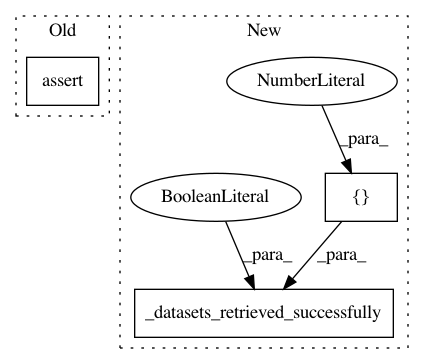

e4e385bf91f7de158f890ddb4fb39143047e61b6,tests/test_datasets/test_dataset_functions.py,TestOpenMLDataset,test_get_datasets,#TestOpenMLDataset#,222
Before Change
openml.config.get_cache_directory(), "datasets", "2", "dataset.arff")))
self.assertTrue(os.path.exists(os.path.join(
openml.config.get_cache_directory(), "datasets", "1", "features.xml")))
self.assertTrue(os.path.exists(os.path.join(
openml.config.get_cache_directory(), "datasets", "2", "features.xml")))
self.assertTrue(os.path.exists(os.path.join(
openml.config.get_cache_directory(), "datasets", "1", "qualities.xml")))
self.assertTrue(os.path.exists(os.path.join(
openml.config.get_cache_directory(), "datasets", "2", "qualities.xml")))
After Change
dids = [1, 2]
datasets = openml.datasets.get_datasets(dids)
self.assertEqual(len(datasets), 2)
self._datasets_retrieved_successfully([1, 2], metadata_only=False)
def test_get_datasets_lazy(self):
dids = [1, 2]
datasets = openml.datasets.get_datasets(dids, download_data=False)
In pattern: SUPERPATTERN
Frequency: 4
Non-data size: 3
Instances
Project Name: openml/openml-python
Commit Name: e4e385bf91f7de158f890ddb4fb39143047e61b6
Time: 2019-04-19
Author: p.gijsbers@tue.nl
File Name: tests/test_datasets/test_dataset_functions.py
Class Name: TestOpenMLDataset
Method Name: test_get_datasets
Project Name: openml/openml-python
Commit Name: e4e385bf91f7de158f890ddb4fb39143047e61b6
Time: 2019-04-19
Author: p.gijsbers@tue.nl
File Name: tests/test_datasets/test_dataset_functions.py
Class Name: TestOpenMLDataset
Method Name: test_get_datasets_lazy
Project Name: openml/openml-python
Commit Name: e4e385bf91f7de158f890ddb4fb39143047e61b6
Time: 2019-04-19
Author: p.gijsbers@tue.nl
File Name: tests/test_datasets/test_dataset_functions.py
Class Name: TestOpenMLDataset
Method Name: test_get_dataset_lazy
Project Name: openml/openml-python
Commit Name: e4e385bf91f7de158f890ddb4fb39143047e61b6
Time: 2019-04-19
Author: p.gijsbers@tue.nl
File Name: tests/test_datasets/test_dataset_functions.py
Class Name: TestOpenMLDataset
Method Name: test_get_dataset